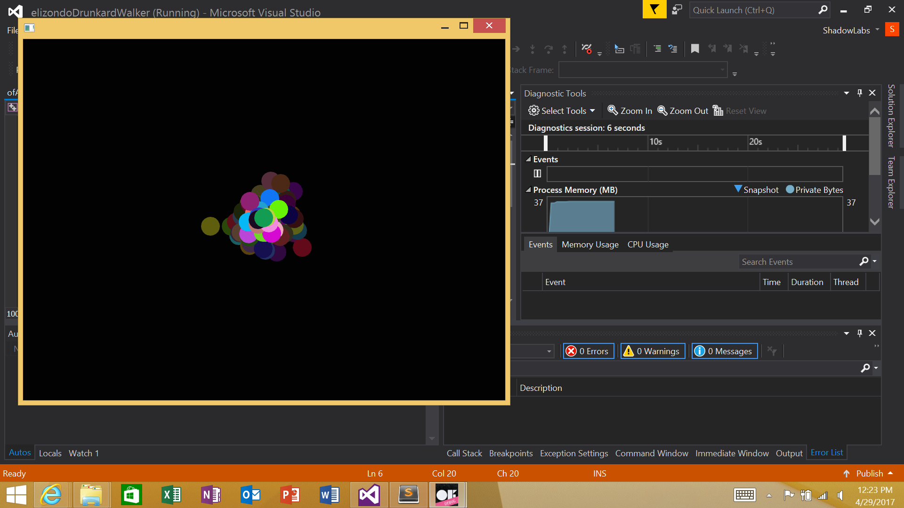
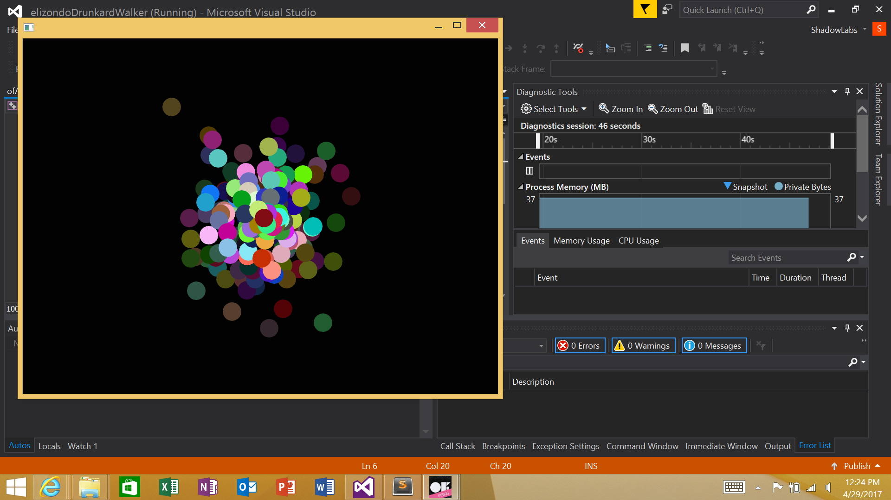

this is a website in the making for my CS162 class, its pretty lame but given time it will get better! i am a huge fan of linux, and am currently a ECE major at OSU. i enjoy writing programs in various languages and mostly work on linux operating systems. i am currently finishing up me senior year and plan on pursuing a second degree in software engineering
for one of the first projects in my CS162 class we created a openFrameworks project involving the simulation of randomly moving circular objects. the objects were placed at the center of the screen and had a 25% chance of moving in four different directions: up, down, left, and right. we called these "drunkard walkers" and have a 100 that are manifested in the program randomly walking there own way.
 